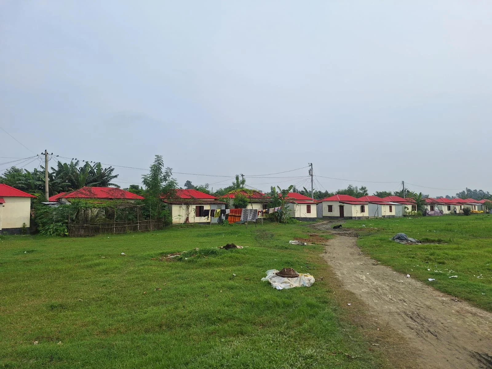
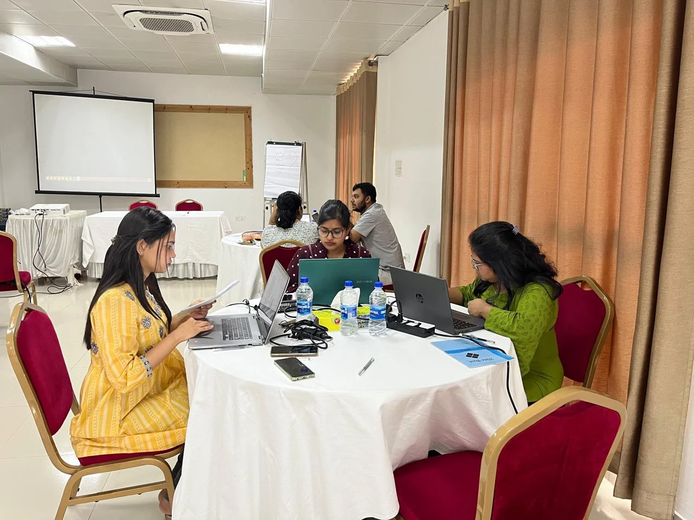
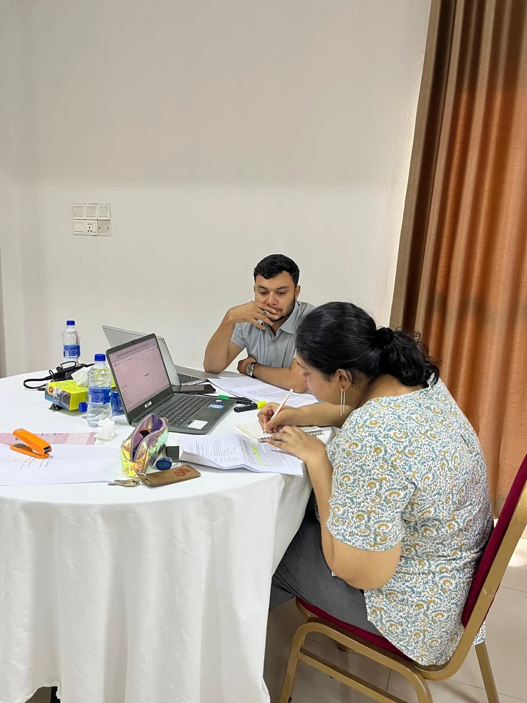
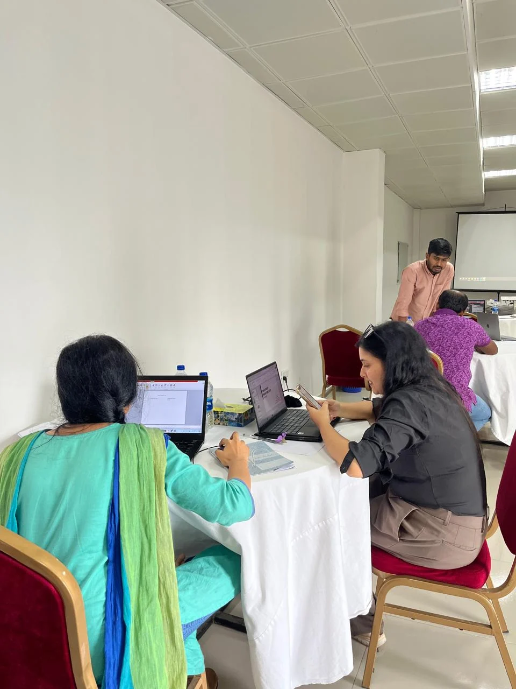
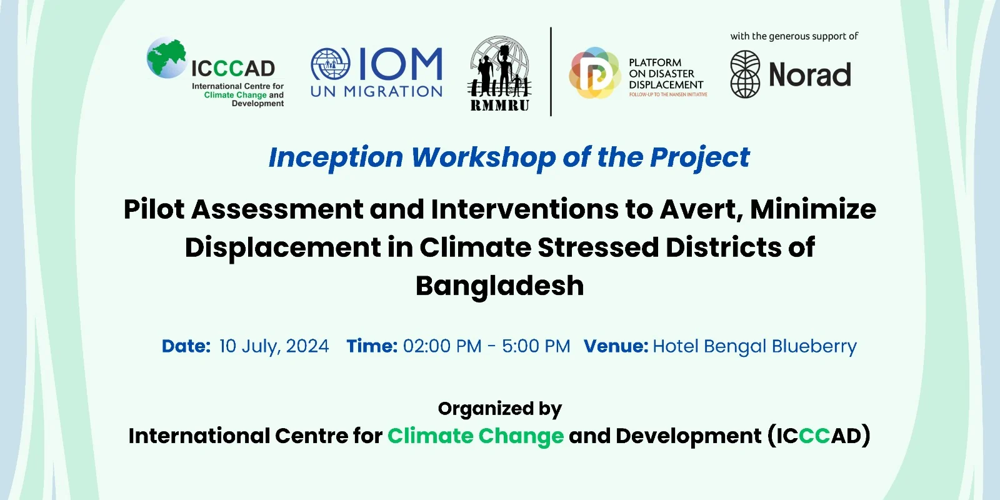
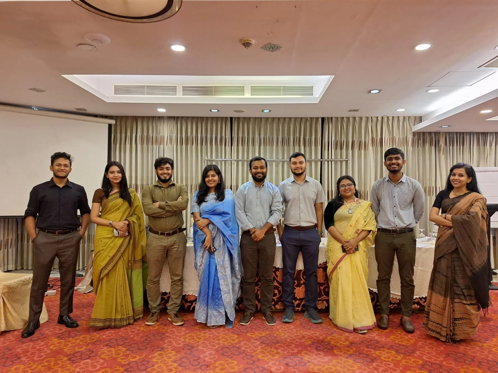

Structure the evidence.
- Household surveys
- Structured questionnaire
- Kobo data collection
- Data cleaning and validation
- Descriptive analysis
- Trend identification
CLIMATE DISPLACEMENT · RIVERBANK EROSION · HOUSEHOLD RESEARCH
Climate Displacement, River Erosion & Access to Land
FIELD RESEARCH / KOBO / MIXED METHODS
Sirajganj, Bangladesh. Riverbank erosion, char settlements and climate displacement.
Land disappears.
A household moves.
The research follows.
In climate-stressed parts of Bangladesh, displacement is rarely a single moment. A riverbank collapses, livelihoods change and access to services shifts. Where people can live next becomes as important as the hazard that forced them to leave.
Under “Pilot Assessment and Interventions to Avert, Minimize Displacement in Climate Stressed Districts of Bangladesh,” I contributed to primary research, questionnaire development, digital field data collection, research coordination and knowledge products.
My fieldwork included household survey activities in riverbank-erosion-affected and char areas of Sirajganj, working directly with communities living with displacement risk and its consequences.
01 / THE PROBLEM

Housing and relocation are part of the wider question of land access, security and long-term resilience.
Climate-related displacement is often described through numbers: households displaced, land lost, people relocated. But displacement changes much more than location.
In riverine areas, erosion can repeatedly reshape both the landscape and the choices available to households. Understanding those choices required primary research with people experiencing the problem directly.
02 / THE FIELD
A riverine environment continuously reshaped by the Jamuna river system.
Housing and relocation are part of the wider question of land access, security and long-term resilience.
Field research made it possible to examine displacement through household experiences, rather than treating it as an abstract climate issue.
For me, this meant working in erosion-affected and char areas, speaking directly with respondents and collecting structured information about how displacement affected their lives.
03 / BUILD THE RESEARCH TOOL
Define what needs to be understood.
Translate concepts into answerable questions.
Structure the instrument for the field.
Review clarity and practical use.
Capture household responses.
Review completeness and consistency.
I contributed to developing and refining the questionnaire, translating broad questions around climate displacement into questions respondents could answer clearly and consistently.
The survey explored household characteristics, displacement experience, land and housing, basic services, livelihoods, losses, adaptation strategies and future options.
04 / FROM QUESTIONNAIRE TO KOBO
Household survey
Structured digital data collection
I used Kobo for digital field data collection. It helped structure responses consistently, reduce manual entry and bring field information into an analyzable dataset.
This connected research methodology with practical data operations.
05 / COLLECT THE EVIDENCE
Riverbank-erosion and char-area fieldwork
Household surveys were conducted with communities affected by climate and disaster displacement. Respondents were describing experiences involving land loss, movement and uncertain futures.
My role included conducting field surveys in Sirajganj and collecting primary evidence through the Kobo-based questionnaire. This required careful communication and observation alongside structured questions.
06 / WHAT WE WERE TRYING TO UNDERSTAND
Riverbank erosion, flooding and climate stress.
Land, housing and livelihood assets.
Temporary, repeated or permanent relocation.
Char areas, nearby settlements, supported housing or urban destinations.
Land tenure, services, employment, social networks and future exposure.
Moving away from a hazard does not automatically eliminate vulnerability. The research examined what happened afterwards.
07 / INSIDE THE RESEARCH PROCESS

Project colleagues reviewing research materials and working through implementation questions.

Working through research instruments, documents and project inputs.

Comparing, refining and documenting inputs during the project working sessions.
Questionnaires, methodology, activities and expected outputs needed collective review before and during implementation. The working sessions connected field implementation with research design.
I participated in these research and capacity-building sessions, contributing to discussions around research tools, data collection and project execution.
08 / PROJECT INCEPTION

Organized by ICCCAD at Hotel Bengal Blueberry. The supplied visual records the project title and participating institutions.
The project brought together research, migration and displacement expertise to strengthen understanding and responses related to disaster and climate displacement in Bangladesh.
The inception process helped establish research direction, implementation responsibilities and connections between evidence generation and wider displacement policy discussions.
ICCCAD · IOM / UN Migration · RMMRU · Platform on Disaster Displacement · With support from Norad
09 / THE TEAM

Researchers and project staff working across assessment, coordination and capacity building.
The work required coordination across field researchers, research staff, technical specialists and partner organisations.
My contribution sat within that wider team, connecting field research with questionnaire work, data collection, reporting and research communication.
10 / MIXED-METHOD RESEARCH
A survey could show that a household had moved. Qualitative evidence could help explain why they moved, where they went, what they lost and what options they had.
The research approach combined structured household evidence with qualitative understanding, including whether relocation had actually reduced vulnerability.
11 / FROM FIELD DATA TO RESEARCH
Field survey data.
Missing values, consistency and field errors.
Dataset preparation.
Patterns and relationships.
Implications for displacement.
Reports, presentations and stakeholder discussions.
I contributed to activities extending beyond collection into analysis, reporting and presentation.
The objective was to turn individual household responses into evidence that could inform understanding of climate displacement and possible interventions.
12 / CAPACITY BUILDING
Comparing, refining and documenting inputs during the project working sessions.
The project also included capacity-building and planning-related work. I participated in sessions where findings, tools and displacement concepts were discussed and translated into materials for wider understanding and implementation.
This extended my role beyond field enumeration.
13 / MY ROLE
14 / WHAT THIS CASE STUDY SHOWS
Turn broad questions into measurable variables.
Collect evidence under real-world conditions.
Use Kobo to structure field information.
Look for patterns across household experiences.
Interpret evidence through field realities.
Translate findings for different audiences.
15 / VISUAL EVIDENCE
16 / WHY THIS WORK MATTERED
Relocation can reduce exposure to one hazard while creating new problems around land, services, employment and social connection. Evidence has to examine the conditions before displacement, the decisions made during it and the opportunities available afterwards.
Working directly in Sirajganj reinforced that distinction for me. The river may trigger the movement. What determines long-term resilience is what happens next.
17 / REFLECTION
Kobo can organize responses. Analysis can reveal patterns. Reports can summarize findings. Behind each row are decisions about land, safety, income and home.
The strength of applied research comes from connecting individual experience to structured evidence, and structured evidence to policy and planning. This project strengthened my ability to work across that chain.
PROJECT SNAPSHOT